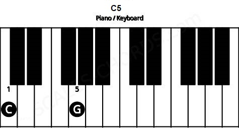
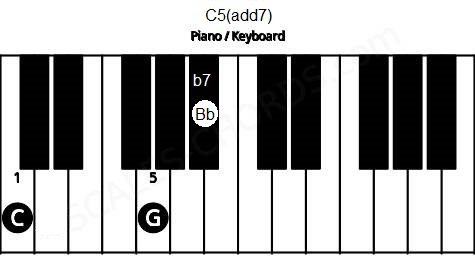
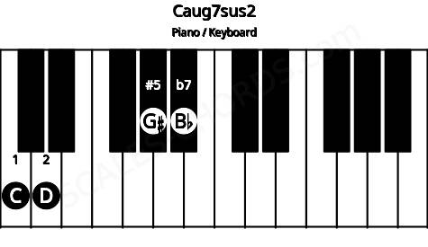
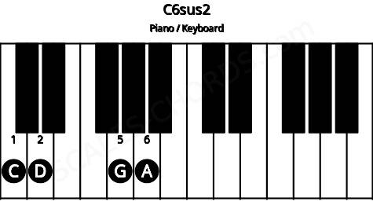

También existen otros tipos de acordes, por ejemplo los acordes de quinta, los acordes "sus2", los "sus4" y los acordes alterados.
Los acordes de quinta son los acordes que contienen la tónica y la quinta, pero no la tercera. Pueden tener variantes que dependerán de la nota que se añada (siempre que no sea una tercera mayor o menor) como por ejemplo, si se añade la séptima resulta el acorde c7(add7).
Los acordes de quinta de ocupan con frecuencia en la música "Rock".
 Los acordes "sus2" resultan si se remplaza la tercera por la segunda, quedando I-II-V.
Se pueden mezclar con los acordes aumentados.
 Los acordes "sus4" resultan si se reemplaza la tercera por la cuarta, quedando I-IV-V. Se ocupan bastante en la música popular cuando se pasa de un acorde sus4 a uno mayor, com Csus4 a C, logrando una resolución de tensión bastante común.
Corresponden a acordes que presentan la tercera mayor y la tercera menor al mismo tiempo. La tercera menor se anota como (+9 o #9). Son acordes de bastante tensión y agresividad que se suelen ocupar bastante en la música "Funk", "BossaNova" y "Jazz".